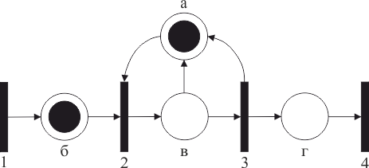

Представление системы сетью Петри основано на двух основополагающих понятиях: событиях и условиях. Возникновением событий управляет состояние системы, которое может быть описано множеством условий. Условие может принимать либо значение «истина», либо значение «ложь» [8].
Возникновение события в системе возможно, если выполняются определенные условия – предусловия события. Возникновение события может привести к выполнению других условий – постусловий события. В качестве примера рассмотрим следующую ниже задачу моделирования.
Моделирование последовательной обработки запросов сервером базы данных. Сервер находится в состоянии ожидания до тех пор, пока от пользователя не поступит запрос клиента, который он обрабатывает и отправляет результат такой обработки пользователю.
Условиями для рассматриваемой системы являются:
Событиями для этой системы являются:
Для перечисленных событий можно составить таблицу их пред- и постусловий (табл. 4.1).
Таблица 4.1 – Условия и события системы
| Событие | Предусловия | Постусловия |
|
1 |
нет |
б |
Такое представление системы легко моделировать сетью Петри. В сети Петри условия моделируются позициями, события – переходами. При этом входы перехода являются предусловиями соответствующего события; выходы – постусловиями. Возникновение события моделируется запуском соответствующего перехода. Выполнение условия представляется фишкой в позиции, соответствующей этому условию. Запуск перехода удаляет фишки, представляющие выполнение предусловий, и образует новые фишки, которые представляют выполнение постусловий.
На рисунке 4.4 предусловие выполняется для события 2.

Рис. 4.4 – Сеть Петри сервера базы данных